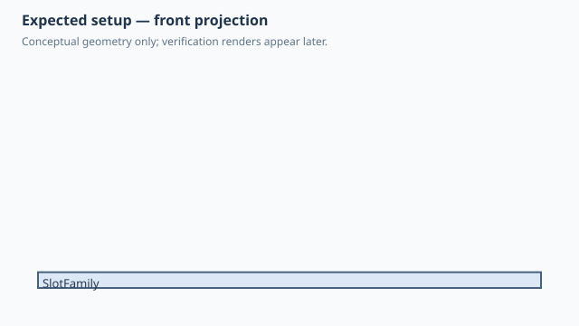

Forge model example
Native sketch Slot family
What this example makes
SolidCraft saves one plate, one Slot family sketch containing five closed profiles and one error-free cut extrusion. The native timeline must not contain sketch.rectangle.rounded as a substitute for Slot construction.


Forge code
This is the complete Forge source used for this example.
"""Qualification fixture for all five native SolidCraft Slot creators."""
class SlotFamily:
width = 160.0
depth = 120.0
thickness = 5.0
SLOT_WIDTH = 8.0
def build(self):
body = Box(
self.width,
self.depth,
self.thickness,
anchor=Anchor.BOTTOM,
)
with Sketch(name="Slot family", on=body) as slots:
SlotCenterToCenter2D((-60, -35), (-40, -35), self.SLOT_WIDTH)
SlotOverall2D((-10, -35), (20, -35), self.SLOT_WIDTH)
SlotCenterPoint2D((55, -35), (65, -35), self.SLOT_WIDTH)
SlotArcThreePoint2D((-50, 25), (-35, 38), (-20, 25), self.SLOT_WIDTH)
SlotArcCenter2D((40, 25), (52, 25), self.SLOT_WIDTH, sweep=120)
return body - slots.extrude(Depth.THROUGH_ALL)
SlotFamily()
API used
SlotCenterToCenter2D(...); SlotOverall2D(...); SlotCenterPoint2D(...); SlotArcThreePoint2D(...); SlotArcCenter2D(...) inside one explicit Sketch
Reference code
The same model is written independently with the reference libraries below. This makes it easier to compare modelling style and the resulting shape.
PythonSCAD
"""PythonSCAD geometry reference for the five Slot-family cut shapes."""
import math
from pythonscad import *
CUT_HEIGHT = 9
CUT_Z = -2
SLOT_WIDTH = 8.0
def arc_band_points(center, radius, start_deg, sweep_deg, width, steps=96):
cx, cy = center
half = width / 2
angles = [
math.radians(start_deg + sweep_deg * i / steps)
for i in range(steps + 1)
]
outer = [
[cx + (radius + half) * math.cos(a), cy + (radius + half) * math.sin(a)]
for a in angles
]
inner = [
[cx + (radius - half) * math.cos(a), cy + (radius - half) * math.sin(a)]
for a in reversed(angles)
]
start = [
cx + radius * math.cos(angles[0]),
cy + radius * math.sin(angles[0]),
]
end = [
cx + radius * math.cos(angles[-1]),
cy + radius * math.sin(angles[-1]),
]
return outer + inner, start, end
def straight_slot(center_x, center_y, center_separation, width=SLOT_WIDTH):
bar = cube([center_separation, width, CUT_HEIGHT], center=True).translate(
[center_x, center_y, 2.5]
)
left = cylinder(d=width, h=CUT_HEIGHT).translate(
[center_x - center_separation / 2, center_y, CUT_Z]
)
right = cylinder(d=width, h=CUT_HEIGHT).translate(
[center_x + center_separation / 2, center_y, CUT_Z]
)
return bar | left | right
def arc_slot(center, radius, start_deg, sweep_deg, width=SLOT_WIDTH):
points, start, end = arc_band_points(
center, radius, start_deg, sweep_deg, width
)
band = polygon(points).linear_extrude(height=CUT_HEIGHT).translate(
[0, 0, CUT_Z]
)
start_cap = cylinder(d=width, h=CUT_HEIGHT).translate(
[start[0], start[1], CUT_Z]
)
end_cap = cylinder(d=width, h=CUT_HEIGHT).translate(
[end[0], end[1], CUT_Z]
)
return band | start_cap | end_cap
plate = cube([160, 120, 5], center=True).up(2.5)
# Center-to-center: end-circle centres are (-60,-35) and (-40,-35).
cutters = straight_slot(-50, -35, 20)
# Overall endpoints are (-10,-35) and (20,-35), so the end-circle centres
# are 4 mm inward from those endpoints: -6 and 16.
cutters = cutters | straight_slot(5, -35, 22)
# Center-point: slot centre is (55,-35), one end-circle centre is (65,-35).
cutters = cutters | straight_slot(55, -35, 20)
# Three-point arc through (-50,25), (-35,38), (-20,25).
three_center = (-35.0, 22.846153846153847)
three_radius = 15.153846153846153
cutters = cutters | arc_slot(
three_center,
three_radius,
171.82876644005026,
-163.65753288010052,
)
# Center arc: centre (40,25), start (52,25), radius 12, sweep +120 deg.
cutters = cutters | arc_slot((40, 25), 12, 0, 120)
model = plate - cutters

Reference result checks · PASS · 4/4 passed
| Check | Status | Expected | Measured | Detail |
|---|---|---|---|---|
| bounds | PASS | {'min': [-80.0, -60.0, 0.0], 'max': [80.0, 60.0, 5.0]} | {'min': [-80.0, -60.0, 0.0], 'max': [80.0, 60.0, 5.0]} | max difference 0.0 mm; allowed 0.5 mm |
| watertight | PASS | True | True | closed mesh |
| volume | PASS | 89526.65799554957 mm³ | 89575.4719487445 mm³ | difference 48.81395319492731 mm³; allowed 55.0 mm³ |
| surface distance probes | PASS | 15 surface measurements | 15/15 within tolerance | largest difference 0.000442635 mm |
pyBOSL2
"""pyBOSL2 geometry reference for the five Slot-family cut shapes."""
import math
from pybosl2 import Path2D, cuboid, cyl
CUT_HEIGHT = 9
CUT_Z = -2
SLOT_WIDTH = 8.0
def arc_band_points(center, radius, start_deg, sweep_deg, width, steps=96):
cx, cy = center
half = width / 2
angles = [
math.radians(start_deg + sweep_deg * i / steps)
for i in range(steps + 1)
]
outer = [
[cx + (radius + half) * math.cos(a), cy + (radius + half) * math.sin(a)]
for a in angles
]
inner = [
[cx + (radius - half) * math.cos(a), cy + (radius - half) * math.sin(a)]
for a in reversed(angles)
]
start = [
cx + radius * math.cos(angles[0]),
cy + radius * math.sin(angles[0]),
]
end = [
cx + radius * math.cos(angles[-1]),
cy + radius * math.sin(angles[-1]),
]
return outer + inner, start, end
def straight_slot(center_x, center_y, center_separation, width=SLOT_WIDTH):
bar = cuboid([center_separation, width, CUT_HEIGHT]).translate(
[center_x, center_y, 2.5]
)
left = cyl(diameter=width, height=CUT_HEIGHT).translate(
[center_x - center_separation / 2, center_y, 2.5]
)
right = cyl(diameter=width, height=CUT_HEIGHT).translate(
[center_x + center_separation / 2, center_y, 2.5]
)
return bar | left | right
def polygon_solid(points):
min_x = min(p[0] for p in points)
max_x = max(p[0] for p in points)
min_y = min(p[1] for p in points)
max_y = max(p[1] for p in points)
box_center = ((min_x + max_x) / 2, (min_y + max_y) / 2)
local = [[p[0] - box_center[0], p[1] - box_center[1]] for p in points]
return (
Path2D(local)
.polygon()
.linear_extrude(height=CUT_HEIGHT)
.translate([box_center[0], box_center[1], CUT_Z])
)
def arc_slot(center, radius, start_deg, sweep_deg, width=SLOT_WIDTH):
points, start, end = arc_band_points(
center, radius, start_deg, sweep_deg, width
)
band = polygon_solid(points)
start_cap = cyl(diameter=width, height=CUT_HEIGHT).translate(
[start[0], start[1], 2.5]
)
end_cap = cyl(diameter=width, height=CUT_HEIGHT).translate(
[end[0], end[1], 2.5]
)
return band | start_cap | end_cap
plate = cuboid([160, 120, 5]).up(2.5)
cutters = straight_slot(-50, -35, 20)
cutters = cutters | straight_slot(5, -35, 22)
cutters = cutters | straight_slot(55, -35, 20)
three_center = (-35.0, 22.846153846153847)
three_radius = 15.153846153846153
cutters = cutters | arc_slot(
three_center,
three_radius,
171.82876644005026,
-163.65753288010052,
)
cutters = cutters | arc_slot((40, 25), 12, 0, 120)
model = plate - cutters

Reference result checks · PASS · 4/4 passed
| Check | Status | Expected | Measured | Detail |
|---|---|---|---|---|
| bounds | PASS | {'min': [-80.0, -60.0, 0.0], 'max': [80.0, 60.0, 5.0]} | {'min': [-80.0, -60.0, 0.0], 'max': [80.0, 60.0, 5.0]} | max difference 0.0 mm; allowed 0.5 mm |
| watertight | PASS | True | True | closed mesh |
| volume | PASS | 89526.65799554957 mm³ | 89575.47184727287 mm³ | difference 48.81385172330192 mm³; allowed 55.0 mm³ |
| surface distance probes | PASS | 15 surface measurements | 15/15 within tolerance | largest difference 0.000442482 mm |
CadQuery
"""CadQuery geometry reference for the five Slot-family cut shapes."""
import math
import cadquery as cq
CUT_HEIGHT = 9
CUT_Z = -2
SLOT_WIDTH = 8.0
def arc_band_points(center, radius, start_deg, sweep_deg, width, steps=96):
cx, cy = center
half = width / 2
angles = [
math.radians(start_deg + sweep_deg * i / steps)
for i in range(steps + 1)
]
outer = [
[cx + (radius + half) * math.cos(a), cy + (radius + half) * math.sin(a)]
for a in angles
]
inner = [
[cx + (radius - half) * math.cos(a), cy + (radius - half) * math.sin(a)]
for a in reversed(angles)
]
start = [
cx + radius * math.cos(angles[0]),
cy + radius * math.sin(angles[0]),
]
end = [
cx + radius * math.cos(angles[-1]),
cy + radius * math.sin(angles[-1]),
]
return outer + inner, start, end
def straight_slot(center_x, center_y, overall_length, width=SLOT_WIDTH):
return (
cq.Workplane("XY")
.center(center_x, center_y)
.slot2D(overall_length, width)
.extrude(CUT_HEIGHT)
.translate((0, 0, CUT_Z))
)
def arc_slot(center, radius, start_deg, sweep_deg, width=SLOT_WIDTH):
points, start, end = arc_band_points(
center, radius, start_deg, sweep_deg, width
)
band = (
cq.Workplane("XY")
.polyline(points)
.close()
.extrude(CUT_HEIGHT)
.translate((0, 0, CUT_Z))
)
start_cap = (
cq.Workplane("XY")
.center(start[0], start[1])
.circle(width / 2)
.extrude(CUT_HEIGHT)
.translate((0, 0, CUT_Z))
)
end_cap = (
cq.Workplane("XY")
.center(end[0], end[1])
.circle(width / 2)
.extrude(CUT_HEIGHT)
.translate((0, 0, CUT_Z))
)
return band.union(start_cap).union(end_cap)
plate = cq.Workplane("XY").box(160, 120, 5, centered=(True, True, False))
# overall lengths: 28, 30 and 28 mm respectively.
cutters = straight_slot(-50, -35, 28)
cutters = cutters.union(straight_slot(5, -35, 30))
cutters = cutters.union(straight_slot(55, -35, 28))
three_center = (-35.0, 22.846153846153847)
three_radius = 15.153846153846153
cutters = cutters.union(
arc_slot(
three_center,
three_radius,
171.82876644005026,
-163.65753288010052,
)
)
cutters = cutters.union(arc_slot((40, 25), 12, 0, 120))
result = plate.cut(cutters)
model = cq.Assembly()
model.add(result, name="slot_family")

Reference result checks · PASS · 4/4 passed
| Check | Status | Expected | Measured | Detail |
|---|---|---|---|---|
| bounds | PASS | {'min': [-80.0, -60.0, 0.0], 'max': [80.0, 60.0, 5.0]} | {'min': [-80.0, -60.0, 0.0], 'max': [80.0, 60.0, 5.0]} | max difference 0.0 mm; allowed 0.5 mm |
| watertight | PASS | True | True | closed mesh |
| volume | PASS | 89526.65799554957 mm³ | 89527.51191460073 mm³ | difference 0.8539190511655761 mm³; allowed 55.0 mm³ |
| surface distance probes | PASS | 15 surface measurements | 15/15 within tolerance | largest difference 0.000442482 mm |
build123d
"""build123d geometry reference for the five Slot-family cut shapes."""
from build123d import (
Align,
Axis,
Box,
BuildLine,
BuildPart,
BuildSketch,
CenterArc,
Locations,
Mode,
SlotCenterPoint,
SlotCenterToCenter,
SlotArc,
SlotOverall,
ThreePointArc,
extrude,
)
bottom = (Align.CENTER, Align.CENTER, Align.MIN)
with BuildPart() as model:
Box(160, 120, 5, align=bottom)
with BuildSketch(model.faces().sort_by(Axis.Z)[-1]):
with Locations((-50, -35)):
SlotCenterToCenter(20, 8)
with Locations((5, -35)):
SlotOverall(30, 8)
SlotCenterPoint((55, -35), (65, -35), 8)
with BuildLine(mode=Mode.PRIVATE) as three_point:
ThreePointArc((-50, 25), (-35, 38), (-20, 25))
SlotArc(three_point.edges()[0], 8)
with BuildLine(mode=Mode.PRIVATE) as center_arc:
CenterArc((40, 25), 12, 0, 120)
SlotArc(center_arc.edges()[0], 8)
extrude(amount=-5, mode=Mode.SUBTRACT)

Reference result checks · PASS · 4/4 passed
| Check | Status | Expected | Measured | Detail |
|---|---|---|---|---|
| bounds | PASS | {'min': [-80.0, -60.0, 0.0], 'max': [80.0, 60.0, 5.0]} | {'min': [-80.0, -60.0, 0.0], 'max': [80.0, 60.0, 5.0]} | max difference 0.0 mm; allowed 0.5 mm |
| watertight | PASS | True | True | closed mesh |
| volume | PASS | 89526.65799554957 mm³ | 89528.29516987003 mm³ | difference 1.6371743204654194 mm³; allowed 55.0 mm³ |
| surface distance probes | PASS | 15 surface measurements | 15/15 within tolerance | largest difference 0.00124277 mm |
How Forge builds it in SolidCraft
Each public constructor emits exactly its matching sketch.slot.* command; the sketch is finished once and one native cut extrusion removes all five profiles.
Show generated SolidCraft commands
parameters.add
parameters.add
parameters.add
solid.box
model.faces
sketch.create
sketch.slot.center_to_center
sketch.slot.overall
sketch.slot.center_point
sketch.slot.arc_three_point
sketch.slot.arc_center
sketch.finish
solid.extrudeSolidCraft result
Built and measured with SolidCraft 0.42.0. Open the measurement details to inspect body sizes and editable parameters.
Original model · 1 bodies
Editable parameters
| Name | Value |
|---|---|
width | 160.0 |
depth | 120.0 |
thickness | 5.0 |
Body size
| Body | Minimum | Maximum |
|---|---|---|
| SlotFamily | [-80, -60, -8.88178e-16] | [80, 60, 5] |
Semantic validation · PASS · 6/6 checks passed
| Status | Level | Check | Expected | Actual |
|---|---|---|---|---|
| PASS | Q4 | declared target geometry | [{"label": "SlotFamily", "min": [-80, -60, 0], "max": [80, 60, 5]}] | [{"min": [-80.0, -60.0, -8.88178419700126e-16], "max": [80.0, 60.0, 5.000000000000003]}] |
| PASS | Q4 | single cut plate body | 1 | 1 |
| PASS | Q4 | plate outer bounds remain unchanged by five slot cuts | {"min": [-80, -60, 0], "max": [80, 60, 5]} | {"max": [80.0, 60.0, 5.000000000000003], "min": [-80.0, -60.0, -8.88178419700126e-16]} |
| PASS | Q4 | five slot cuts remove the qualified amount of material | {"volume_mm3": 89526.65799554957, "faces": 26, "face_types": {"cylinder": 14, "plane": 12}} | {"volume_mm3": 89526.6579965052, "faces": 26, "face_types": {"cylinder": 14, "plane": 12}} |
| PASS | Q4 | native sketch contains five closed slot profiles | {"name": "Slot family", "profiles": 5, "curves": 29, "status": "solved"} | {"curves": 29, "dof": 27, "id": 2, "name": "Slot family", "profiles": 5, "status": "solved", "visible": false} |
| PASS | Q4 | slot family remains one native sketch plus one cut feature | [["BoxFeature", "Box1"], ["Sketch", "Slot family"], ["ExtrudeFeature", "Slot family"]] | [["BoxFeature", "Box1"], ["Sketch", "Slot family"], ["ExtrudeFeature", "Slot family"]] |
Visual result
Actual is the SolidCraft render. Goal shows the expected shape. Overlay places both on top of each other so differences are easy to see.
Top

Current SolidCraft top view

Expected geometry in the same top view

Expected geometry over the actual top view
Front

Current SolidCraft front view

Expected geometry in the same front view

Expected geometry over the actual front view
Iso
Current SolidCraft iso view

Expected geometry in the same iso view

Expected geometry over the actual iso view
Show extra saved-render views
Right

Current SolidCraft right view

Expected geometry in the same right view

Expected geometry over the actual right view
Technical test details
Q1 and Q2 tests
These are the exact automated tests used for this example.
- Q1 PASS
- Q2 PASS
Geometry checks
These are the sizes and measurement points used by the automated checks.
| Body | Minimum | Maximum |
|---|---|---|
| SlotFamily | [-80, -60, 0] | [80, 60, 5] |
- Is the size check enough for this model? No — The five slot cuts do not change the plate envelope. Volume and 3D slot-wall probes are required.
- Views checked: top, front, iso
- Internal features checked: 5
- Expected volume: 89526.65799554957 mm³ (±55.0 mm³)
- Closed solid expected: True
- Surface points checked: 15
Show all geometry check points
Internal features
- center-to-center slot: width 8.0 mm, 2 centre-line points, Z
[0.0, 5.0] - overall slot: width 8.0 mm, 2 centre-line points, Z
[0.0, 5.0] - center-point slot: width 8.0 mm, 2 centre-line points, Z
[0.0, 5.0] - three-point arc slot: width 8.0 mm, 21 centre-line points, Z
[0.0, 5.0] - center arc slot: width 8.0 mm, 21 centre-line points, Z
[0.0, 5.0]
Surface measurement points
- center-to-center slot at z=0.5: point
[-50.0, -35.0, 0.5]→ 4.0 mm (±0.3 mm) - center-to-center slot at z=2.5: point
[-50.0, -35.0, 2.5]→ 4.0 mm (±0.3 mm) - center-to-center slot at z=4.5: point
[-50.0, -35.0, 4.5]→ 4.0 mm (±0.3 mm) - overall slot at z=0.5: point
[5.0, -35.0, 0.5]→ 4.0 mm (±0.3 mm) - overall slot at z=2.5: point
[5.0, -35.0, 2.5]→ 4.0 mm (±0.3 mm) - overall slot at z=4.5: point
[5.0, -35.0, 4.5]→ 4.0 mm (±0.3 mm) - center-point slot at z=0.5: point
[55.0, -35.0, 0.5]→ 4.0 mm (±0.3 mm) - center-point slot at z=2.5: point
[55.0, -35.0, 2.5]→ 4.0 mm (±0.3 mm) - center-point slot at z=4.5: point
[55.0, -35.0, 4.5]→ 4.0 mm (±0.3 mm) - three-point arc slot at z=0.5: point
[-35.0, 38.0, 0.5]→ 4.0 mm (±0.3 mm) - three-point arc slot at z=2.5: point
[-35.0, 38.0, 2.5]→ 4.0 mm (±0.3 mm) - three-point arc slot at z=4.5: point
[-35.0, 38.0, 4.5]→ 4.0 mm (±0.3 mm) - center arc slot at z=0.5: point
[46.0, 35.392304845413264, 0.5]→ 4.0 mm (±0.3 mm) - center arc slot at z=2.5: point
[46.0, 35.392304845413264, 2.5]→ 4.0 mm (±0.3 mm) - center arc slot at z=4.5: point
[46.0, 35.392304845413264, 4.5]→ 4.0 mm (±0.3 mm)
Saved-design test
No saved-model change is required. No Q5 mutation is required; this case isolates the five native sketch construction methods and their saved feature history.
Raw test files
- Forge fixture source
- PythonSCAD reference source
- pyBOSL2 reference source
- CadQuery reference source
- build123d reference source
- Generated command JSON in build output
- results.json
- measurements.json
- joint-inspect.json
- model.sc
- model.step
- qualification-result.json
- validation.json
- visual-validation.json
- camera-front.json
- camera-iso.json
- camera-right.json
- camera-top.json
- q1-case-evidence.txt
- q2-case-evidence.txt
- Native snapshot: model.png
- Native snapshot: model-top.png
- Native snapshot: goal-top.png
- Native snapshot: overlay-top.png
- Native snapshot: model-front.png
- Native snapshot: goal-front.png
- Native snapshot: overlay-front.png
- Native snapshot: visual-diff-front.png
- Native snapshot: model-right.png
- Native snapshot: goal-right.png
- Native snapshot: overlay-right.png
- Native snapshot: visual-diff-right.png
- Native snapshot: model-iso.png
- Native snapshot: goal-iso.png
- Native snapshot: overlay-iso.png
- Native snapshot: visual-diff-iso.png
- Reference evidence: reference-pythonscad/result.json
- Reference evidence: reference-pythonscad/model.stl
- Reference evidence: reference-pythonscad/model-front.png
- Reference evidence: reference-pythonscad/model-right.png
- Reference evidence: reference-pythonscad/model-iso.png
- Reference evidence: reference-pybosl2/result.json
- Reference evidence: reference-pybosl2/model.stl
- Reference evidence: reference-pybosl2/model-front.png
- Reference evidence: reference-pybosl2/model-right.png
- Reference evidence: reference-pybosl2/model-iso.png
- Reference evidence: reference-cadquery/result.json
- Reference evidence: reference-cadquery/model.stl
- Reference evidence: reference-cadquery/model-front.png
- Reference evidence: reference-cadquery/model-right.png
- Reference evidence: reference-cadquery/model-iso.png
- Reference evidence: reference-build123d/result.json
- Reference evidence: reference-build123d/model.stl
- Reference evidence: reference-build123d/model-front.png
- Reference evidence: reference-build123d/model-right.png
- Reference evidence: reference-build123d/model-iso.png


Reference documentation
- SolidCraft: Native Q2-Q4 additionally prove the five sketch.slot.* command identities. The four comparison libraries independently prove the resulting five cut shapes.